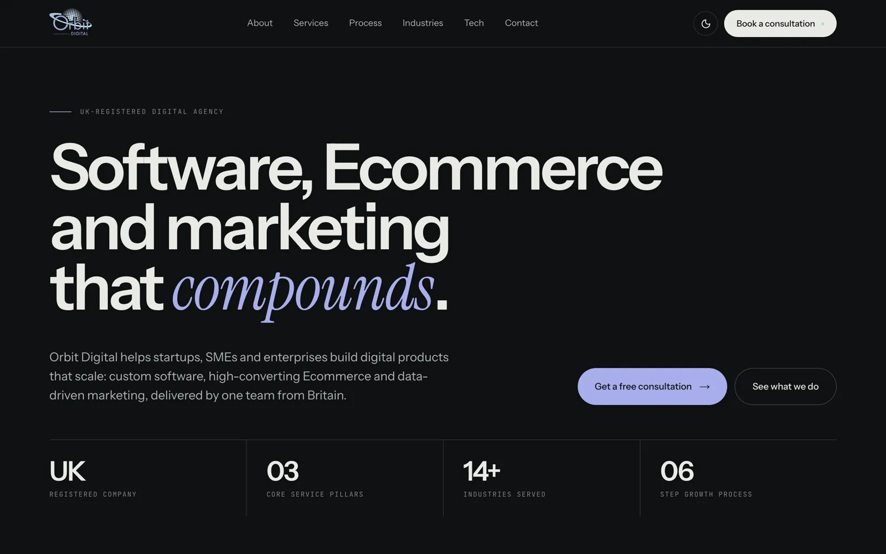
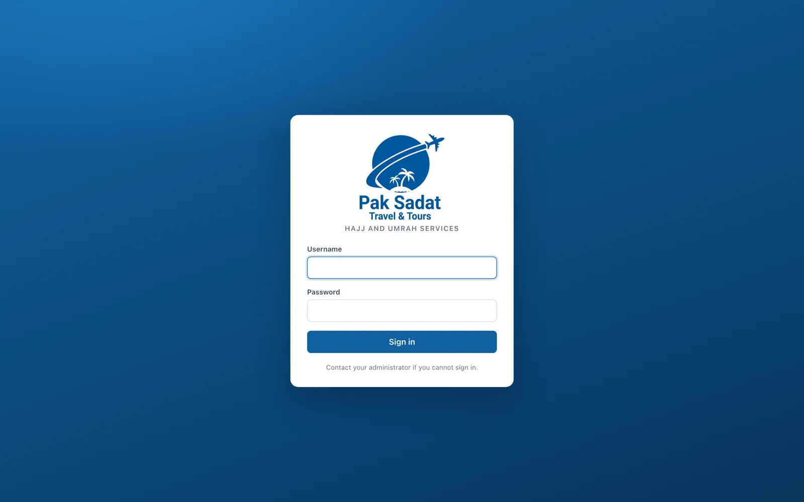
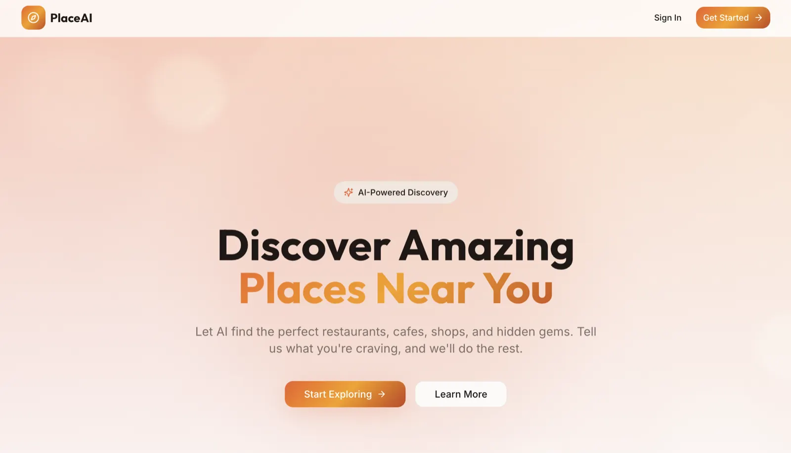
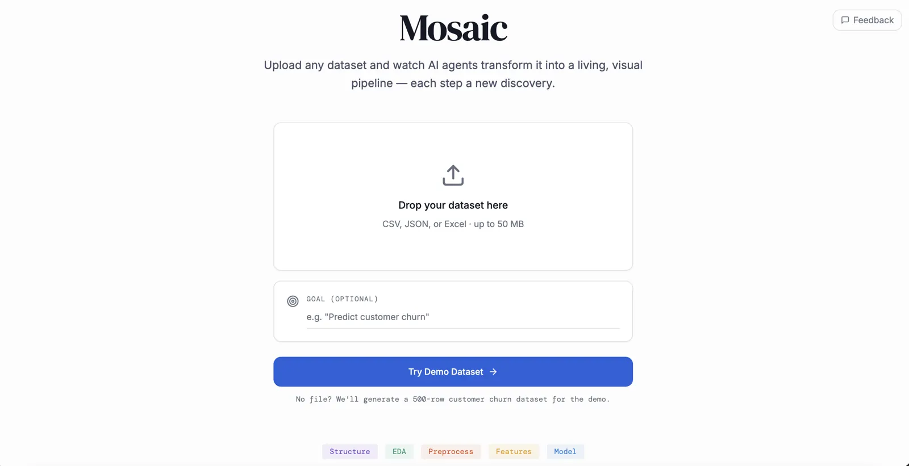
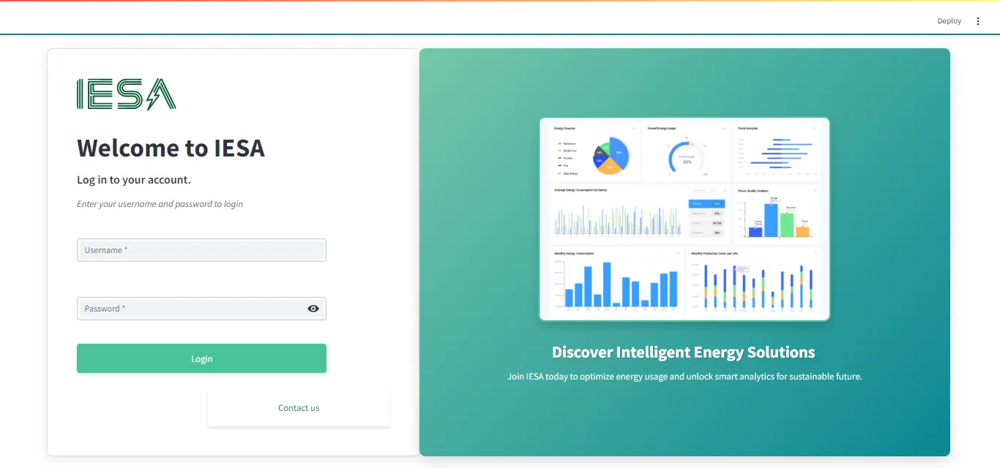

01
Discovery & MVP scoping
Personas, user journeys and a prioritised backlog (RICE / MoSCoW), so you know what to build first and what to leave out.
Taking on new projects
Marktide is a two-founder studio from Islamabad. One of us scopes the product, the other builds it. You get a spec your team can trust and software that runs in production.
Our experience comes from teams in the UK, the Netherlands and Belgium
Services
Hire us for one part or for the whole thing. Most clients start with discovery and stay for the build.
Personas, user journeys and a prioritised backlog (RICE / MoSCoW), so you know what to build first and what to leave out.
Specs that cover payloads, validation rules, edge cases and error handling as well as the user story. Engineers build from them without asking twice.
Multi-agent workflows, retrieval and tool use, and MCP integrations, inside interfaces people actually use. Example: sales-visit recordings turned into CRM reports.
SaaS platforms, admin panels and iOS / Android apps, built end to end and deployed on infrastructure we set up.
Ingestion, ETL and dashboards that turn operational data into decisions, from industrial sensors to Power BI.
Jira or ClickUp set up properly, a sprint cadence, hands-on QA on real devices, UAT sign-off and release SOPs that keep production stable.
Work
Client systems, products we have run in production and AI builds. Each one says who did what.

A complete website for a UK client, from development to AWS hosting. The same hands that wrote it put it into production.
orbitdigital.uk ↗
A Hajj and Umrah voucher system, developed and deployed end to end. Pilgrims present the right details at onboarding and offboarding.
voucher.paksadat.com ↗Multi-tenant, white-label SaaS for tennis and padel academies, on web, iOS and Android. Planning for 18+ modules, from enrollment and scheduling to invoicing and reporting. Release SOPs and QA sign-off introduced, and the Coach apps taken to App Store submission.
go.trainingsmanager.nl ↗A social mobile app with a React admin panel and real-time chat. Roadmap ownership across Trust & Safety, Matching, Maps and Notifications, plus integrations for KYC (Yoti / Veriff), Google Maps and Twilio / SignalR.
panel.froy.app ↗Product and engineering for AI agents, a point-of-sale SaaS, a job fair platform with mobile apps, and Power BI reporting. AI workflows prototyped with Claude and MCP.
AI agent workflows that pull contacts, tasks and relationship context out of voice, text and photo inputs, with Supabase-backed extraction and React Native mobile features.

Location discovery with five specialised AI agents for place recommendations.
Live demo ↗
Multi-agent pipeline that streams progress to the UI with server-sent events.
Live demo ↗
Energy-planning tool with ML and LLM agents for scenario analysis. Python, Streamlit, MySQL.
Live demo ↗Team
No account managers or hand-offs. The people on your call are the people doing the work.
Co-founder · Product Manager / Product Owner
Product manager with a software engineering background, working on SaaS, data and AI products. At Data Panda (Belgium) he owns product and QA for AI agents and SaaS platforms. Before that, at Sideline Technologies, he ran TrainingsManager and FROY: PRDs, Scrumban, API reviews and App Store releases.
BSc Software Engineering, Foundation University · Software Product Management Specialization, University of Alberta
Co-founder · AI Engineer / Forward Deployed Engineer
Engineer who builds AI-powered apps, data systems and the infrastructure they run on. Data & AI Engineer at Data Panda (Belgium). Previously built agentic capture at Top of Mind, AI-native web and mobile apps at Sideline Technologies, and Spark / Kafka / Airflow pipelines for industrial clients at Dataventiv.
Process
We sort out what's unclear before development starts. After that, delivery is a routine.
A call, then a short workshop. We agree on users, outcomes and what "done" means.
Backlog, PRDs and API contracts with acceptance criteria. You approve them before we build.
Two-week sprints with a demo at the end of each. You see working software every sprint.
UAT sign-off, a production release with a set procedure, then hotfixes and the next iteration.
Contact
Tell us what you're working on. The first step is a 30-minute discovery call.